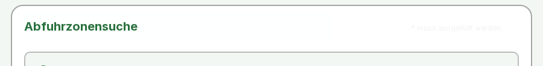
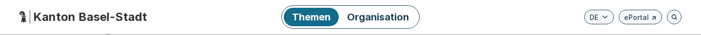
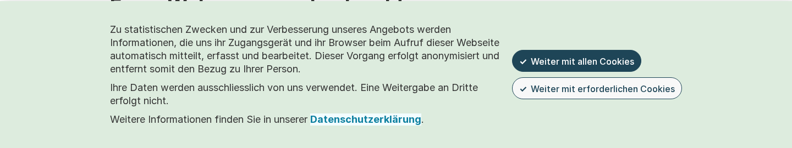
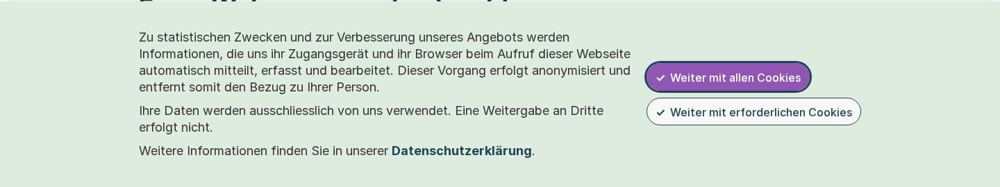

Basel-Stadt: öffentliche Dienste – Feldbericht und Partner-Pilot
Privater Arbeitsbericht zur Durchsicht durch den Eigentümer, Stand 29.10.2026. Keine Veröffentlichung, keine Freigabe, keine Konformitätsaussage. Feldlauf: Code 4fdb589d, 12 Seiten, 233.8 s.
nur öffentliche Seitenwww.bs.ch und eportal.egov.bs.chkein Login, keine Formularedeterministische Werkzeugekeine Modellaufrufe im FeldMistral gesamt unverändert 0,073 von 5 USD
Kurz: 25 öffentliche Dienste aus der offiziellen Navigation inventarisiert (Tiefe ≤2, 32 von 40 erlaubten Dokumenten), 12 davon nach Aufgabe und Seitentyp ausgewählt und mit dem bestehenden Produktions-Scanner sowie sicheren Tastatur-Journeys geprüft (24 von 24 Läufen abgeschlossen). Zwei Beobachtungen wurden in einem frischen Browser reproduziert: ein Hinweistext im Formular der Abfallzonen-Suche, der praktisch unsichtbar dargestellt wird (gerenderter Kontrast etwa 1,1:1), und eine unpassende ARIA-Auszeichnung des seitenweiten Suchfelds (auf 9 von 12 Seiten). Ein dritter Kandidat – fehlende Fokusmarkierung – erwies sich beim Nachspielen als Fehlalarm unseres eigenen Werkzeugs. Die eigentlichen Transaktionen (eServices, Formulare, eUmzug, Steuern) liegen auf anderen Hosts und wurden bewusst nicht geprüft.
Fortschritt: was gebaut, getestet und nur vorgeschlagen ist
Stand 29.10.2026. Privater Arbeits- und Forschungsbericht zur Durchsicht durch den Eigentümer; keine menschliche Freigabe, keine Veröffentlichung, keine WCAG-Konformitätsaussage.
Code-Stände
| Stand | Commit | Inhalt |
|---|---|---|
| main | c8a70f8 (Commit vom 26.10.2026, zuletzt geprüft am 29.10.2026) | Produktiver Scanner (scan, Journeys, audit, Berichte) und opt-in lokaler Publikations-Export mit signierter Freigabe |
| Draft-PR #52 | 87d6e17 (29.10.2026) | A/B/C/M-Experiment im experimentellen Track (src/experimental/adaptive/), nicht gemergt |
| Draft-PR #53 | auf #52 gestapelt (Plan-Commit 1c72291 auf #52-Stand 87d6e17, 29.10.2026) | Dieser Basel-Feldbericht: Quellen-Inventar, begrenzter Discovery-Fetcher, Feld-Batch |
Status nach Nachweisart
| Bestandteil | Implementiert | Getestet | Live beobachtet | Menschlich geprüft |
|---|---|---|---|---|
| Deterministischer Scanner: axe, sichere Tastatur-Journeys, Coverage, Screenshots | ja (main) | ja (volle Testsuite am finalen Stand dieses Berichts) | ja: 12 öffentliche Basel-Seiten am 29.10.2026 (Feldlauf dieses Berichts) | nein |
| Publikations-Export mit Richtlinie und SSH-signierter Freigabe (opt-in, lokal) | ja (main) | ja, nur mit simulierter Autorität | nein | nein (keine echte Freigabe erteilt) |
| Experimenteller Frontier-Scheduler A, lokales LLM B, Hybrid C, Mistral M | ja (PR #52, nur Fixture-Modus) | ja | ja, nur auf Entwicklungs-Fixtures (Loopback) | nein (Beurteilung modellgestützt) |
| Partner-Pilot, AT-Nutzer-Validierung, Anbindung weiterer Berichtspfade | nein (vorgeschlagen) | – | – | – |
Architektur
PUBLICATION_EXPORT_INTEGRATION.md, im Code geprüft): buildReport, buildSiteReport, auditSite, Watch-Vergleich, Kohorten, Control-Center-Upload/Serving, Populationsanalyse, Outreach. Die Basel-Feldartefakte laufen nicht über den Export: Dies ist ein privater Arbeitsbericht ohne Veröffentlichung.Ergebnisse A/B/C/M (nur offengelegte Entwicklungs-Fixtures)
A = experimenteller Frontier-Scheduler mit Regeltabelle (kein Modell); B = lokales qwen3:1.7b; C = B + Mistral-Beratung; M = mistral-small-2603 direkt als Erkundungs-Policy. A ist nicht der produktive Scanner und nicht für öffentliche Ursprünge freigegeben.
| Segment | A | B | C | M |
|---|---|---|---|---|
| s1 (ohne Reparatur), gesetzte Barrieren | 4/4 | 0/4 | 0/4 | – |
| s2 (Wiederholungs-Sperre), gesetzte Barrieren | 4/4 | 0/4 | 0/4 | – |
| s3 (3 Wiederholungen), gesetzte Instanzen | 12/12 | – | – | 6/12 |
| s3 blinde Beurteilung: belegt / widerlegt / unzureichend | 12 / 0 / 0 | – | – | 7 / 20 / 4 |
| s3 Duplikate / nicht gelistete Behauptungen | 0 / 0 | – | – | 14 / 6 |
| s3 Zeit (9 Sitzungen) | 7 s | – | – | 129 s |
- Zählweise: 4 verschiedene gesetzte Barrieren je Durchgang; in s3 × 3 Wiederholungen = 12 Instanzen. Von M's 20 widerlegten Behauptungen bleiben ohne Duplikate 7, inhaltlich 4 verschiedene falsche Aussagen.
- M besuchte alle Seiten, hängte aber falsche Evidenz an (dev-k1: richtiger Defekt, Startseite statt Unterseite belegt) und löste die nötige Escape-Interaktion im Dialog nie aus (dev-k3); stattdessen behauptete es in allen 3 Läufen einen Fehler am korrekt funktionierenden Dialog, im frischen Browser widerlegt.
- Zeit: Von M's 129 s entfallen rund 111 s auf unsere eigene Ratenbegrenzung (1,1 s je Aufruf); das ist keine reine Modell-Latenz.
- Lokal: qwen3:1.7b lief nur auf CPU (Ollama ohne GPU-Backend). Keine Aussage über andere lokale Modelle oder GPU-Inferenz.
- Kosten: Mistral gesamt 0,073 USD (laut Ledger; maßgeblich ist die Rechnung), davon s3 0,069 USD.
- Grenze: Alles auf offengelegten Entwicklungs-Fixtures dev-k1..k3. Das ist weder Feld-Recall noch -Präzision noch eine Validierung mit Nutzenden assistiver Technologien. Die Beurteilung erfolgte modellgestützt (frische Claude-Kontexte), nicht durch Menschen.
Verbesserungs-Schwellen je Rolle
| Rolle | Schwelle bevor sie zählt | Stand |
|---|---|---|
| KI als Detektor | verifizierte Ausführung und Evidenz; akzeptables Verhalten bei falschen Behauptungen | nicht erreicht (M: 20 von 31 widerlegt; B/C: 0 Funde) |
| KI als Zusammenfassung / Triage-Hilfe | getreue, evidenzgestützte Formulierung mit Quellen und Enthaltung; Detektor-Recall nicht nötig | nicht gemessen |
| Deterministischer Partner-Pilot | muss nicht warten, bis KI den Fixture-Scheduler schlägt | vorgeschlagen |
Quellen: docs/experiments/BASEL_FIELD_HANDOFF.md, ABC_LOCAL_HYBRID.md, abc-report/README.md, abc-report/index.html, ADAPTIVE_MISTRAL.md, PUBLICATION_EXPORT_INTEGRATION.md, LOCAL_REVIEW_APPROVAL.md, ADR-0013.
Basel: Dienstlandschaft (Stichprobe, nicht vollständig)
Quelle: offizielle Navigation von www.bs.ch und ePortal, abgerufen am 29.10.2026 (robots.txt beachtet: Crawl-delay 10 s). «Beobachtet» = auf der Seite gefunden; Aufgabe, Zielgruppe und Priorität sind unsere Einordnung. Die Zuordnung Stadt/Kanton/Gemeinde ist nicht aus einer offiziellen Quelle belegt und bleibt «unbekannt»; Riehen und Bettingen sind nur Kontext. Die Erklärung zur Barrierefreiheit ist eine Selbstauskunft des Kantons (teilweise konform; PDFs, Videos, iFrames, Leichte Sprache genannt), keine Prüfung durch uns.
| ID | Dienst | Aufgabe / Zielgruppe | Zuständig (Seitenangabe) | Transaktion auf anderem Host | PDF-Links | Priorität | Geprüft |
|---|---|---|---|---|---|---|---|
| S01 | Startseite bs.ch | Einstieg, Suche, Navigation zu Diensten · alle | unbekannt | – | 0 | hoch | p01-start |
| S02 | ePortal (öffentliche Startseite) | Online-Dienste finden · alle | unbekannt | – | 0 | hoch | p12-eportal |
| S03 | Erklärung zur Barrierefreiheit | Barrieren melden, Stand erfahren · alle | unbekannt | – | 0 | mittel | nein |
| S04 | Umzug innerhalb des Kantons melden | Adressänderung · Einwohnende | Einwohneramt | eservices.egov.bs.ch, www.eumzug.swiss | 1 | hoch | p02-umzug |
| S05 | Wegzug vom Kanton melden | Abmeldung · Einwohnende | Einwohneramt | eservices.egov.bs.ch, formulare.bs.ch, www.eumzug.swiss | 0 | mittel | nein |
| S06 | Zuzug in den Kanton | Anmeldung, Begrüssungstermin · Neuzuziehende | Einwohneramt | eservices.egov.bs.ch | 3 | hoch | p04-zuzug |
| S07 | Pass / Identitätskarte bestellen | Identität, Termin · Einwohnende | Passamt | eservices.egov.bs.ch | 3 | hoch | p03-pass |
| S08 | Abfallabfuhr | Abfuhrtermine und Zone · Einwohnende | Tiefbauamt | app.draeggwaegg.ch, eservices.egov.bs.ch, trashcal.maxgfeller.com | 11 | hoch | p05-abfall |
| S09 | Zonensuche (App) | Abfuhrzone zur Adresse · Einwohnende | unbekannt | – | 0 | mittel | p06-zonensuche |
| S10 | Abfall-ABC | Entsorgung nachschlagen · Einwohnende | unbekannt | – | 0 | niedrig | nein |
| S11 | Sozialhilferechner (App) | Anspruch abschätzen · Personen mit wenig Einkommen | unbekannt | – | 0 | hoch | p07-sozialhilferechner |
| S12 | Leistungsrechner (Übersicht) | Passende Leistung finden · Personen mit wenig Einkommen | unbekannt | – | 0 | mittel | nein |
| S13 | Finanzielle Hilfe für Menschen mit Behinderung | Leistungen finden · Menschen mit Behinderung | unbekannt | – | 0 | hoch | nein |
| S14 | Anwohnerparkkarte | Bewilligung beantragen · Einwohnende | Kantonspolizei | eservices.egov.bs.ch, formulare.bs.ch | 1 | mittel | p08-anwohnerparkkarte |
| S15 | Behindertenparkkarte | Bewilligung beantragen · Menschen mit Gehbehinderung | Kantonspolizei | formulare.bs.ch | 3 | hoch | p09-behindertenparkkarte |
| S16 | Busse bezahlen | Busse begleichen · alle | Kantonspolizei | bussen.egov.bs.ch | 0 | niedrig | nein |
| S17 | Online-Formulare Steuerverwaltung | Steuerformulare und Anfragen · Steuerpflichtige | unbekannt | eservices.egov.bs.ch, esteuern.bs.ch, formulare.bs.ch | 0 | hoch | p10-steuerformulare |
| S18 | Steuern berechnen | Steuerbelastung abschätzen · Steuerpflichtige | unbekannt | – | 0 | niedrig | nein |
| S19 | Kita | Kita-Platz und Beiträge · Familien | Fachstelle Tagesbetreuung | ed-kinderbetreuung.edubs.ch, eservices.egov.bs.ch | 8 | hoch | p11-kita |
| S20 | Brauche ich eine Baubewilligung? | Bewilligungspflicht klären · Einwohnende, Unternehmen | Bau- und Gastgewerbeinspektorat | jaxforms.cloud.bs.ch | 0 | mittel | nein |
| S21 | Gründung & Ansiedlung von Firmen | Firma gründen · Unternehmen | unbekannt | – | 0 | mittel | nein |
| S22 | Erstmaliger Stellenantritt (Arbeitsbewilligung) | Arbeitsbewilligung · Arbeitgebende, Arbeitnehmende | Arbeitsbeziehungen (ABZ) Amt für Wirtschaft und Arbeit (AWA) | – | 0 | mittel | nein |
| S23 | Inhalte in Gebärdensprache | Informationen in Gebärdensprache · gehörlose Menschen | unbekannt | – | 0 | mittel | nein |
| S24 | Kinderbetreuung (Übersicht) | Betreuung finden · Familien | unbekannt | – | 0 | niedrig | nein |
| S25 | Steuererklärung (Übersicht) | Steuererklärung einreichen · Steuerpflichtige | unbekannt | – | 0 | mittel | nein |
Nicht geprüfte Hosts (künftige Warteschlange, eigene Freigabe nötig): app.draeggwaegg.ch, bussen.egov.bs.ch, ed-kinderbetreuung.edubs.ch, eservices.egov.bs.ch, esteuern.bs.ch, formulare.bs.ch, geo.bs.ch, jaxforms.cloud.bs.ch, map.geo.bs.ch, trashcal.maxgfeller.com, www.eumzug.swiss. Der ePortal-Link der Startseite führt auf ekonto.egov.bs.ch (Anmeldung) und wurde nicht aufgerufen.
Geprüfte Stichprobe (12 Seiten, 29.10.2026)
Werkzeuge: Produktions-Scanner (axe-core 4.13, ganzseitiger Screenshot, Coverage) und sichere Tastatur-Journeys (Fokusverlauf, aufklappbare Elemente, Dialog öffnen und Escape, Sprunglink; keine Formulare, keine Absende-Elemente). Chromium, Ansicht 1440×900, ein Seitenaufruf je Werkzeug, mindestens 10 s Abstand, keine Wiederholung. Unterressourcen wurden wie in einem normalen Browser geladen; andere Hosts wurden nicht geprüft. axe «verletzt» ist ein automatisches Signal im Forschungsprofil, kein WCAG-Urteil; «unvollständig» braucht menschliche Prüfung.
| Seite | Aufgabe | Läufe | axe verletzt / unvollständig / bestanden / nicht anwendbar | Journeys bestanden / zu prüfen / nicht anwendbar |
|---|---|---|---|---|
| p01-start Startseite mit Hauptmenü, Suche, Kacheln | Einstieg und Navigation zu allen Diensten | scan: ok · journey: ok | 1 / 1 / 44 / 44 | 1 / 3 / 0 |
| p02-umzug Dienst-Einstiegsseite mit Absprung zu eUmzug/eServices | Umzug innerhalb des Kantons melden | scan: ok · journey: ok | 3 / 1 / 44 / 44 | 1 / 3 / 0 |
| p03-pass Dienst-Einstiegsseite, Terminbezug, viele Fremdlinks | Pass / Identitätskarte bestellen | scan: ok · journey: ok | 4 / 1 / 47 / 41 | 1 / 3 / 0 |
| p04-zuzug Dienst-Einstiegsseite mit eServices und PDFs | Zuzug anmelden | scan: ok · journey: ok | 4 / 1 / 46 / 42 | 1 / 3 / 0 |
| p05-abfall Informationsseite mit Karten-iFrame, PDF-Zonenplänen, App-Links | Abfuhrtermine und -zone finden | scan: ok · journey: ok | 3 / 1 / 47 / 41 | 1 / 3 / 0 |
| p06-zonensuche Interaktive Such-App (Formular, nur Laden und Tastaturfokus) | Abfuhrzone zur Adresse suchen | scan: ok · journey: ok | 4 / 1 / 43 / 45 | 2 / 2 / 0 |
| p07-sozialhilferechner Rechner-App (Formular, nur Laden und Tastaturfokus) | Anspruch auf Sozialhilfe abschätzen | scan: ok · journey: ok | 3 / 2 / 44 / 44 | 1 / 3 / 0 |
| p08-anwohnerparkkarte Dienst-Einstiegsseite mit eServices/Formularen | Anwohnerparkkarte beantragen | scan: ok · journey: ok | 3 / 1 / 51 / 37 | 1 / 3 / 0 |
| p09-behindertenparkkarte Dienst-Einstiegsseite mit Formular-Absprung | Behindertenparkkarte beantragen | scan: ok · journey: ok | 3 / 1 / 46 / 42 | 1 / 3 / 0 |
| p10-steuerformulare Linksammlung zu eSteuern/eServices | Steuerformulare online finden | scan: ok · journey: ok | 3 / 1 / 44 / 44 | 1 / 3 / 0 |
| p11-kita Informationsseite mit vielen PDFs und Fachportal | Kita-Platz und Beiträge finden | scan: ok · journey: ok | 3 / 1 / 47 / 41 | 1 / 3 / 0 |
| p12-eportal JavaScript-Anwendung (ePortal-Startseite, öffentlich) · gelandet auf /dashboard (gleiches Origin; ob Weiterleitung oder Anwendungsroute, wurde nicht festgehalten) | Öffentliche ePortal-Angebote finden | scan: ok · journey: ok | 1 / 2 / 43 / 46 | 1 / 0 / 3 |
Wiederkehrende Komponenten (gleiches Element auf mehreren Seiten, einmal gezählt, alle Fundstellen behalten): axe.landmark-main-is-top-level an main auf 10 Seiten; axe.aria-allowed-attr an #searchinput auf 9 Seiten; axe.region an .bk-main-canvas > div > h1 auf 9 Seiten; axe.region an .h-\[250px\] > h3 auf 8 Seiten; axe.region an #search-privacy-hint auf 8 Seiten; axe.region an .h-\[250px\] > .mb-30 auf 5 Seiten; axe.region an .mb-30 auf 3 Seiten. Keine Gesamtnote, keine Rangliste, keine Hochrechnung auf den ganzen Webauftritt.
Reproduzierte Beobachtungen
Jede Beobachtung wurde nach dem Feldlauf in einem frischen Browser-Kontext nachgespielt (nur Laden, Tab-Taste, Attribute lesen; keine Eingabe). Die Behebungsvorschläge sind Hypothesen; nichts wurde an den Seiten verändert.
Fall 1 · Hinweis «* muss ausgefüllt werden» in der Abfallzonen-Suche ist praktisch unsichtbar
Aufgabe: Abfuhrzone zur eigenen Adresse finden (Formular-App /apps/zonensuche). Zuständig: unbekannt (keine Seitenangabe; Abfallabfuhr: Tiefbauamt).

Berechnete CSS-Farbe: rgb(119, 119, 119) auf rgb(255, 255, 255), 12px, Gewicht 400 → 4.48:1 (axe: 4,47:1; verlangt 4,5:1) Dargestellte Pixel (gemessen mit scripts/basel_pixel_measure.py, Ausschnitt 160x20+950+382): nach 1 s: dunkelster Grauwert 242 auf 255 → 1.12:1 nach 5 s: dunkelster Grauwert 242 auf 255 → 1.12:1 Deckkraft aller Elternelemente nach 5 s: 1 (kein Übergang) Mögliche Ursache (Hypothese): h3.sticky.bg-white/90 «Abfuhrzonensuche» (saved DOM, p06 scan) mit 90 % weissem Hintergrund liegt über dem Hinweis; 0,1·119 + 0,9·255 ≈ 241 (gemessen 242). Hypothese, nicht durch Layoutmessung bestätigt.
- Beobachtete Folge: Der Hinweis, dass ein Feld Pflicht ist, ist für sehende Personen mit eingeschränktem Kontrastsehen praktisch nicht lesbar.
- Nachspielen: Seite laden, 5 s warten, Bereich «Abfuhrzonensuche» ansehen; in den Entwicklerwerkzeugen die tatsächlich gerenderte Farbe prüfen.
- Behebungshypothese: prüfen, ob die klebende Überschrift den Hinweis überdeckt (Ebene/Position anpassen), und den Hinweis mindestens im Kontrast 4,5:1 darstellen.
- Selbstauskunft Basel: «Die Kontrastverhältnisse entsprechen den Vorgaben.» Diese Einzelbeobachtung steht dazu im Widerspruch; sie ist keine Aussage über den ganzen Webauftritt.
- Noch offen: Bestätigung der Ursache durch Layoutmessung; ob der Pflichtfeld-Hinweis anders vermittelt wird (z. B. am Feld selbst «Adresse: *»).
Fall 2 · Seitenweites Suchfeld: ARIA-Auszeichnung passt nicht zur Rolle
Aufgabe: über die Suche einen Dienst finden (Kopfbereich; dieses axe-Signal auf 9 von 12 geprüften Seiten). Zuständig: unbekannt (gemeinsame Vorlage des Webauftritts).

<input id="searchinput" type="search" aria-label="Ihre Frage eingeben" aria-autocomplete="list" aria-expanded="false" aria-controls="searchterm-suggestions"> Vom Browser ausgegebene Rolle: - searchbox "Ihre Frage eingeben" Element mit id «searchterm-suggestions» beim Laden vorhanden: nein axe: aria-allowed-attr («aria-expanded» ist für ein Suchfeld nicht erlaubt), auf 9 Seiten
- Beobachtete Folge (technisch): Das Feld wird als «searchbox» ausgegeben, trägt aber Attribute eines Kombinationsfelds (Vorschlagsliste); die referenzierte Vorschlagsliste existiert beim Laden nicht.
- Mögliche Folge für Nutzende (Hypothese): Screenreader kündigen Vorschläge eventuell nicht oder uneinheitlich an. Das muss mit Hilfsmitteln (Screenreader) geprüft werden.
- Behebungshypothese: entweder das Muster «combobox» vollständig umsetzen (role, aria-expanded, Liste im DOM) oder die Kombinationsfeld-Attribute entfernen.
- Selbstauskunft Basel: Diese Fehlerklasse wird nicht genannt (genannt sind PDFs, Videos, iFrames).
Negativbefund · «Fokus nicht sichtbar» war ein Fehlalarm unseres Werkzeugs
Der Fokus-Journey meldete auf mehreren Seiten «0/3 bzw. 2/5 Fokusziele mit deutlich erkennbarer Markierung». Nachgespielt wurde nur die Seite «Umzug melden» (0/3); für die übrigen Seiten ist der Fehlalarm wahrscheinlich, aber nicht einzeln geprüft:


Tab 1: a «Datenschutzerklärung» · im Bild: ja · Umrandung: none 1px rgb(14, 128, 160) · im Cookie-Hinweis: Cookie-Einstellungen Tab 2: button «Weiter mit allen Cookies» · im Bild: ja · Umrandung: solid 3px rgb(30, 69, 87) · im Cookie-Hinweis: Cookie-Einstellungen Tab 3: button «Weiter mit erforderlichen Cookies» · im Bild: ja · Umrandung: solid 3px rgb(30, 69, 87) · im Cookie-Hinweis: Cookie-Einstellungen Tab 4: body «» · im Bild: – · Umrandung: – · im Cookie-Hinweis: –
Lehre: Unsere Heuristik erkennt nur Umrandung oder Schatten und mass den Cookie-Hinweis im Feldlauf ausserhalb des Bildausschnitts. Die Markierung ist vorhanden. Das ist eine Verbesserung für unser Werkzeug, kein Befund zu Basel. Beobachtet, aber nicht bewertet: Die ersten Tab-Schritte führen in den Cookie-Hinweis; der vierte verlässt die Seite. Ob der Hinweis den übrigen Inhalt bewusst sperrt, wäre mit Tastatur- und Screenreader-Nutzenden zu klären.
Alle Anfragen an die öffentlichen Seiten
Vollständige Zählung der Seitenaufrufe auf www.bs.ch und eportal.egov.bs.ch (Unterressourcen der Seiten nicht mitgezählt). Kein anderer Host wurde aufgerufen; keiner Weiterleitung auf einen anderen Host gefolgt, keine Wiederholung, kein Formular.
| Schritt | Aufrufe | Beleg |
|---|---|---|
| robots.txt beider Origins (vor der Entdeckung, von Hand mit curl) | 2 | discovery/robots-*.txt (ePortal-Datei leer) |
| Entdeckung (HTML, Tiefe ≤2, je 10 s Abstand) | 32 | discovery/ledger.json |
| Feldlauf: Scanner + Journeys auf 12 Seiten | 24 | batch/run-manifest.json |
| Nachspielen im frischen Browser (aufgezeichnet) | 4 | repro-03507ff/repro.json (3), repro-cbcd355/repro.json (1) |
| Nachspielen, zwei fehlgeschlagene Versuche (Skriptfehler nach dem Laden der Seite «Umzug melden»; damals nicht aufgezeichnet, Skript seither korrigiert) | 2 | dieser Bericht |
| Summe | 64 |
Alle Werkzeugläufe endeten ohne Abbruch (24/24 «ok»).
Grenzen dieser Stichprobe
- 12 Einstiegs- und Informationsseiten, keine Transaktion: eServices, Formulare, eUmzug, eSteuern, Karten und PDFs liegen auf anderen Hosts oder hinter Anmeldung und wurden nicht geprüft.
- Automatische Prüfungen finden nur einen Teil der Barrieren; «unvollständig» (Kontrast auf 12 Seiten, Dialog-Fokus auf 11 Seiten) braucht menschliche Prüfung.
- Keine Erfahrung mit Screenreader oder anderen Hilfsmitteln; keine Beteiligung von Menschen mit Behinderungen.
- Die Stichprobe ist nach Aufgabe gewählt, nicht zufällig; Ähnlichkeit der Vorlage beweist kein gleiches Verhalten auf anderen Seiten.
Ausblick
- Prozess und Evidenz: Fokus-Heuristik um Hintergrund- und Farbmarkierung erweitern und vor der Messung in den Bildausschnitt scrollen (heute Fehlalarm); gerenderten Kontrast aus Pixeln zusätzlich zur CSS-Berechnung messen (Fall 1 zeigt den Unterschied).
- Nützliche Modellrollen: Modelle nicht als Detektor (siehe A/B/C/M); höchstens als Formulierungs- oder Triagehilfe mit Belegzitaten, getrennt von verifizierten Beobachtungen. In diesem Feldlauf wurden keine Modelle verwendet.
- Partner und Hilfsmittel: Die beiden reproduzierten Beobachtungen und alle «unvollständig»-Signale gemeinsam mit einer Fachperson und Hilfsmittel-Nutzenden prüfen, bevor daraus Aussagen werden.
Nächster Schritt und Vorschlag für einen kleinen Partner-Pilot
Nächster Schritt: Die zwei reproduzierten Beobachtungen der Webredaktion Basel-Stadt (Kontakt laut Erklärung zur Barrierefreiheit) als private Arbeitsnotiz vorlegen – nur nach Freigabe durch den Eigentümer, ohne Veröffentlichung.
Pilot-Vorschlag (Entwurf, nichts vereinbart):
- Aufgabe: «Umzug innerhalb des Kantons melden» von der Informationsseite bis zum Ende des öffentlichen Teils, plus die Abfallzonen-Suche als kleine Formular-App.
- Verantwortlich: Einwohneramt (laut Seitenangabe) für den Umzug, Webredaktion für Vorlage und Suche; Zuständigkeit für eServices/eUmzug zu klären.
- Fachliche Prüfung: eine Fachperson Barrierefreiheit und mindestens zwei Hilfsmittel-Nutzende (Screenreader, Tastatur) bestätigen oder verwerfen jede Beobachtung.
- Wiederholbarer Nachtest: derselbe eingefrorene Lauf (gleiche Seiten, Werkzeuge, Abstände) vor und nach einer allfälligen Änderung; nur ein vergleichbarer Nachtest gilt als «behoben».
- Nützliches Ergebnis: eine kurze, belegte Liste je Aufgabe (Bildschirmfoto, DOM/Fokus-Beleg, Schritte, Hypothese), die die Webredaktion in ihren bestehenden Review-Prozess übernehmen kann – ergänzend zum Aktionsplan 2025–2028, nicht als Bewertung.
Keine Zusage, kein Auftrag, keine Unterstützung durch Basel-Stadt impliziert. Die Transaktions-Hosts bräuchten eine eigene, ausdrückliche Freigabe.
Erzeugt mit scripts/basel_report.py. Rohdaten (HTML, Scans, Journeys, Bildschirmfotos) ausserhalb von git; Prüfsummen in ARCHIVE.sha256. Bildschirmfotos zeigen öffentliche Seiten ohne Personendaten.